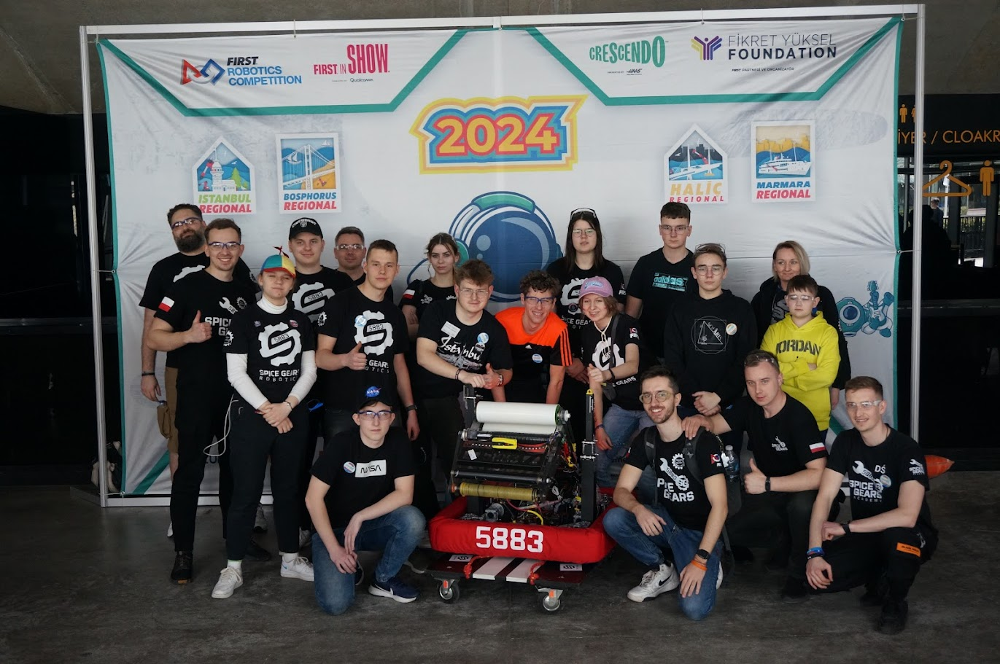
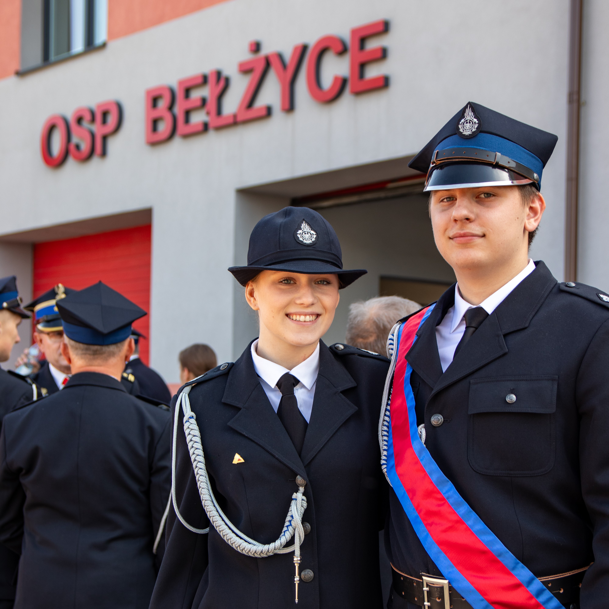

O mnie
Nazywam się Kornel (w internecie korneljuz). Mieszkam w Bełżycach i interesuje się wszystkim co technologiczne.
Mam dwóch młodszych braci i całkiem sporą rodzinę. Jestem instruktorem robotyki, ucze młodsze dzieci robotyki za pomocą LEGO.
W wolnym czasie programuje i kieruje działem Programistów w drużynie, jestem ich liderem.
Satelita
Od niedawna razem z kolegami z klasy tworzę projekt mini satelity, którą mamy zamiar zrzucić ze sporej wysokości i wykonać kilka pomiarów. Satelita ma być wyposażona w czujniki, pozwalające zbadać temperaturę, wilgotność, ciśnienie, wysokość i inne parametry lotu oraz musi wysłać te dane do stacji naziemnej w każdej sekundzie lotu.
Robotyka
Robotami zacząłem interesować się w 2020 roku. Zapisałem się na zajęcia w Kraśniku a 3 lata później zostałem Mistrzem Polski w Robotyce. Od tego czasu zostałem zaproszony do drużyny olimpijskiej Spice Gears 5883, która reprezentuje Polskę na arenie międzynarodowej. Razem z tą drużyną uczestniczyłem w zawodach w 2022 roku w Szwajcarii, w 2023 byliśmy również w Singapurze. W tym roku we wrześniu wylatujemy na olimpiadę do Grecji.
Straż Pożarna
Od dziecka interesowałem się strażą pożarną. Do swojej jednostki dołączyłem w 2018 roku. Obecnie jestem dowódcą Młodzieżowej Drużyny Pożarniczej, a już za rok będe miał możliwość uczestniczenia w kursie podstawowym strażaków OSP, który uprawni mnie do brania aktywnego udziału w działaniach i gaszeniu pożarów.
Kod źródłowy
Kod źródłowy tej strony jest dostępny na GitHubie.